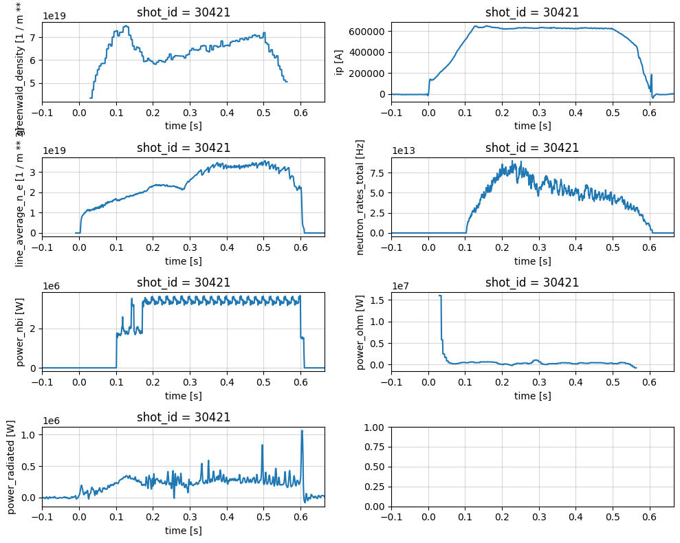
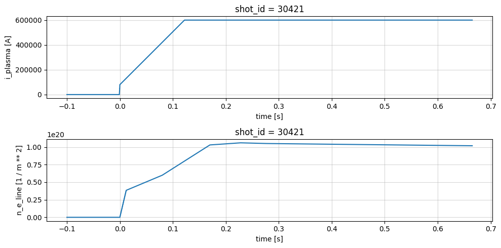
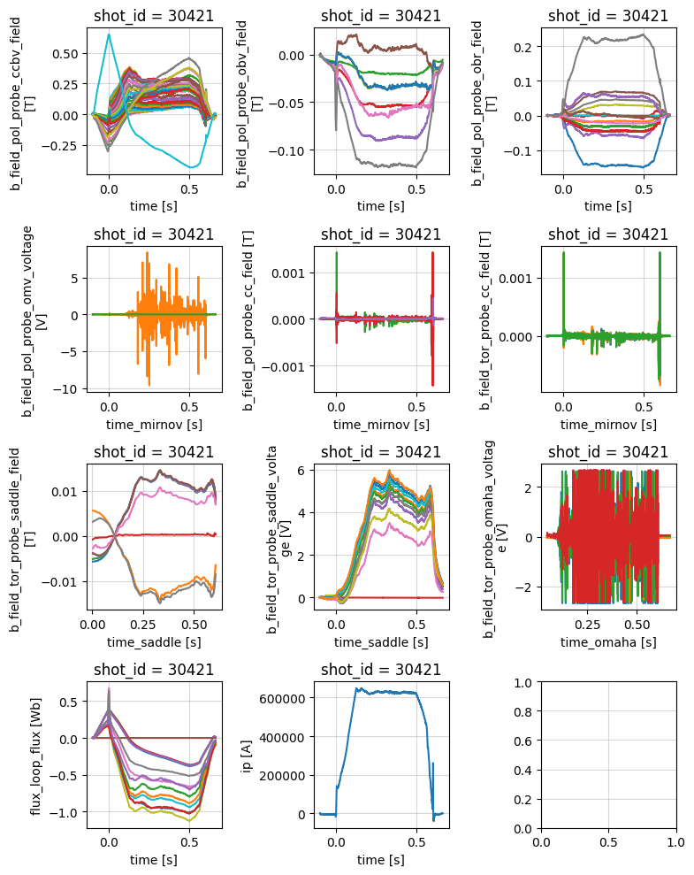
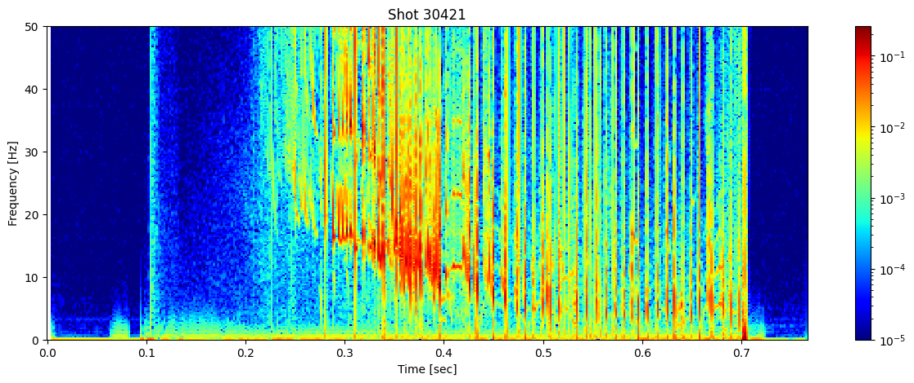
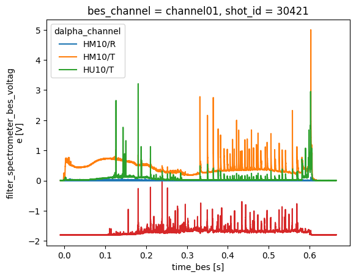
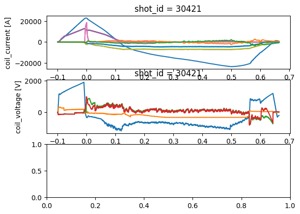

!pip install matplotlib s3fs "xarray[io]"
import zarr
import numpy as np
import xarray as xr
import matplotlib.pyplot as plt
from matplotlib.colors import LogNorm
from scipy.signal import stft
Level 2 Data#
In this notebook we demonstrate the variety of different data available in the FAIR MAST dataset. In this example we are using level 2 MAST data, which includes cropping, interpolation, calibration, etc. of each signal, as well as mapping each diagnostic group try and follow IMAS naming convetions. The level 2 data is well-indexed data and follows the FAIR principles. Shots are also filtered using the plasma current to remove shots which were only used for testing, comissioning, machine calibration etc.
First we need to connect to the remote S3 storage bucket to access the data. Each shot from MAST is stored as a seperate Zarr file.
Using fsspec and xarray we can remotely read data directly over the web. In the example below we also turn on local file caching, allowing us to avoid reading over the network multiple times.
shot_id = 30421
endpoint_url = 'https://s3.echo.stfc.ac.uk'
url = f's3://mast/level2/shots/{shot_id}.zarr'
# Get a handle to the remote file
store = zarr.storage.FsspecStore.from_url(
url,
storage_options=dict(
protocol='simplecache',
target_protocol="s3",
cache_storage='.cache',
target_options=dict(
anon=True, endpoint_url=endpoint_url, asynchronous=True
)
)
)
Summary Profiles#
The summary group provides a collection of general physics quantities for an experiment.
profiles = xr.open_zarr(store, group='summary')
plot_1d_profiles(profiles)
profiles
<xarray.Dataset> Size: 49kB
Dimensions: (time: 767)
Coordinates:
shot_id int64 8B ...
* time (time) float64 6kB -0.1 -0.099 -0.098 ... 0.665 0.666
Data variables:
greenwald_density (time) float64 6kB ...
ip (time) float64 6kB ...
line_average_n_e (time) float64 6kB ...
neutron_rates_total (time) float64 6kB ...
power_nbi (time) float64 6kB ...
power_ohm (time) float64 6kB ...
power_radiated (time) float64 6kB ...
Attributes:
name: summary
description: Summary of physics quantities from a simulation or an expe...
imas: summary
license_name: Creative Commons 4.0 BY-SA
license_url: https://creativecommons.org/licenses/by-sa/4.0/
ingested_at: 2026-06-14T00:42:16Z
commit_url: https://github.com/ukaea/fair-mast-ingestion/tree/862f08d7...
Pulse Schedule#
profiles = xr.open_zarr(store, group='pulse_schedule')
fig, axes = plt.subplots(2, 1, figsize=(10, 5))
axes = axes.flatten()
profiles['i_plasma'].plot(x='time', ax=axes[0])
profiles['n_e_line'].plot(x='time', ax=axes[1])
for ax in axes:
ax.grid('on', alpha=0.5)
plt.tight_layout()
profiles
<xarray.Dataset> Size: 490kB
Dimensions: (time: 15305)
Coordinates:
shot_id int64 8B ...
* time (time) float64 122kB -0.1 -0.09995 -0.0999 ... 0.6652 0.6652
Data variables:
i_plasma (time) float64 122kB ...
n_e_line (time) float64 122kB ...
z_ref (time) float64 122kB ...
Attributes:
name: pulse_schedule
description: Description of Pulse Schedule, described by subsystems wav...
imas: pulse_schedule
license_name: Creative Commons 4.0 BY-SA
license_url: https://creativecommons.org/licenses/by-sa/4.0/
ingested_at: 2026-06-14T00:42:15Z
commit_url: https://github.com/ukaea/fair-mast-ingestion/tree/862f08d7...
Magnetics#
Magnetic diagnostics for equilibrium identification and plasma shape control.
profiles = xr.open_zarr(store, group='magnetics')
fig, axes = plt.subplots(4, 3, figsize=(8, 10))
axes = axes.flatten()
profiles['b_field_pol_probe_ccbv_field'].plot.line(x='time', ax=axes[0], add_legend=False)
profiles['b_field_pol_probe_obv_field'].plot.line(x='time', ax=axes[1], add_legend=False)
profiles['b_field_pol_probe_obr_field'].plot.line(x='time', ax=axes[2], add_legend=False)
profiles['b_field_pol_probe_omv_voltage'].plot.line(x='time_mirnov', ax=axes[3], add_legend=False)
profiles['b_field_pol_probe_cc_field'].plot.line(x='time_mirnov', ax=axes[4], add_legend=False)
profiles['b_field_tor_probe_cc_field'].plot.line(x='time_mirnov', ax=axes[5], add_legend=False)
profiles['b_field_tor_probe_saddle_field'].plot.line(x='time_saddle', ax=axes[6], add_legend=False)
profiles['b_field_tor_probe_saddle_voltage'].plot.line(x='time_saddle', ax=axes[7], add_legend=False)
profiles['b_field_tor_probe_omaha_voltage'].plot.line(x='time_omaha', ax=axes[8], add_legend=False)
profiles['flux_loop_flux'].plot.line(x='time', ax=axes[9], add_legend=False)
profiles['ip'].plot.line(x='time', ax=axes[10], add_legend=False)
for ax in axes:
ax.grid('on', alpha=0.5)
plt.tight_layout()
profiles
<xarray.Dataset> Size: 109MB
Dimensions: (
b_field_pol_probe_cc_channel: 5,
time_mirnov: 382601,
b_field_pol_probe_cc_geometry_channel: 40,
b_field_pol_probe_ccbv_channel: 40,
time: 3827,
...
coordinate: 28,
b_field_tor_probe_saddle_m_geometry_channel: 12,
b_field_tor_probe_saddle_u_geometry_channel: 12,
b_field_tor_probe_saddle_voltage_channel: 12,
flux_loop_channel: 15,
flux_loop_geometry_channel: 44)
Coordinates: (12/26)
* b_field_pol_probe_cc_channel (b_field_pol_probe_cc_channel) <U3 60B ...
* b_field_pol_probe_cc_geometry_channel (b_field_pol_probe_cc_geometry_channel) object 320B ...
* b_field_pol_probe_ccbv_channel (b_field_pol_probe_ccbv_channel) <U6 960B ...
* b_field_pol_probe_ccbv_geometry_channel (b_field_pol_probe_ccbv_geometry_channel) object 320B ...
* b_field_pol_probe_obr_channel (b_field_pol_probe_obr_channel) <U5 380B ...
* b_field_pol_probe_obr_geometry_channel (b_field_pol_probe_obr_geometry_channel) object 152B ...
... ...
* flux_loop_geometry_channel (flux_loop_geometry_channel) object 352B ...
shot_id int64 8B 30421
* time (time) float64 31kB -0.1 ......
* time_mirnov (time_mirnov) float64 3MB -0...
* time_omaha (time_omaha) float64 12MB -0...
* time_saddle (time_saddle) float64 306kB ...
Data variables: (12/46)
b_field_pol_probe_cc_field (b_field_pol_probe_cc_channel, time_mirnov) float64 15MB ...
b_field_pol_probe_cc_phi (b_field_pol_probe_cc_geometry_channel) float64 320B ...
b_field_pol_probe_cc_r (b_field_pol_probe_cc_geometry_channel) float64 320B ...
b_field_pol_probe_cc_z (b_field_pol_probe_cc_geometry_channel) float64 320B ...
b_field_pol_probe_ccbv_field (b_field_pol_probe_ccbv_channel, time) float64 1MB ...
b_field_pol_probe_ccbv_length (b_field_pol_probe_ccbv_geometry_channel) float64 320B ...
... ...
b_field_tor_probe_saddle_u_z (b_field_tor_probe_saddle_u_geometry_channel, coordinate) float64 3kB ...
b_field_tor_probe_saddle_voltage (b_field_tor_probe_saddle_voltage_channel, time_saddle) float64 4MB ...
flux_loop_flux (flux_loop_channel, time) float64 459kB ...
flux_loop_r (flux_loop_geometry_channel) float64 352B ...
flux_loop_z (flux_loop_geometry_channel) float64 352B ...
ip (time) float64 31kB -864.2 ....
Attributes:
name: magnetics
description: Magnetic diagnostics for equilibrium identification and pl...
imas: magnetics
license_name: Creative Commons 4.0 BY-SA
license_url: https://creativecommons.org/licenses/by-sa/4.0/
ingested_at: 2026-06-14T00:43:35Z
commit_url: https://github.com/ukaea/fair-mast-ingestion/tree/862f08d7...
Looking at the spectrogram of one of the mirnov coils can show us information about the MHD modes. Here we see several mode instabilities occuring before the plasma is lost.
ds = profiles['b_field_pol_probe_omv_voltage'].isel(b_field_pol_probe_omv_channel=1)
# Parameters to limit the number of frequencies
nperseg = 2000 # Number of points per segment
nfft = 2000 # Number of FFT points
# Compute the Short-Time Fourier Transform (STFT)
sample_rate = 1/(ds.time_mirnov[1] - ds.time_mirnov[0])
f, t, Zxx = stft(ds, fs=int(sample_rate), nperseg=nperseg, nfft=nfft)
fig, ax = plt.subplots(figsize=(15, 5))
cax = ax.pcolormesh(t, f/1000, np.abs(Zxx), shading='nearest', cmap='jet', norm=LogNorm(vmin=1e-5))
ax.set_ylim(0, 50)
ax.set_title(f'Shot {shot_id}')
ax.set_ylabel('Frequency [Hz]')
ax.set_xlabel('Time [sec]')
plt.colorbar(cax, ax=ax)
plt.show()

Spectrometer Visible#
Spectrometer in visible light range diagnostic
profiles = xr.open_zarr(store, group='spectrometer_visible')
profiles['filter_spectrometer_dalpha_voltage'].plot.line(x='time')
profiles['filter_spectrometer_bes_voltage'].isel(bes_channel=0).plot.line(x='time_bes')
profiles
<xarray.Dataset> Size: 358MB
Dimensions: (time: 33761, bes_channel: 32,
time_bes: 1350401, dalpha_channel: 3)
Coordinates:
* bes_channel (bes_channel) <U9 1kB 'channel01' ......
* dalpha_channel (dalpha_channel) <U6 72B 'HM10/R' ......
shot_id int64 8B 30421
* time (time) float64 270kB -0.01 ... 0.6652
* time_bes (time_bes) float64 11MB -0.01 ... 0.6652
Data variables:
density_gradient (time) float64 270kB ...
filter_spectrometer_bes_voltage (bes_channel, time_bes) float64 346MB ...
filter_spectrometer_dalpha_voltage (dalpha_channel, time) float64 810kB ...
Attributes:
name: spectrometer_visible
description: Spectrometer in visible light range diagnostic
imas: spectrometer_visible
license_name: Creative Commons 4.0 BY-SA
license_url: https://creativecommons.org/licenses/by-sa/4.0/
ingested_at: 2026-06-14T00:44:35Z
commit_url: https://github.com/ukaea/fair-mast-ingestion/tree/862f08d7...
PF Active#
profiles = xr.open_zarr(store, group='pf_active')
fig, axes = plt.subplots(3, 1)
axes = axes.flatten()
profiles['coil_current'].plot.line(x='time', ax=axes[0], add_legend=False)
profiles['coil_voltage'].plot.line(x='time', ax=axes[1], add_legend=False)
profiles['solenoid_current'].plot.line(x='time', ax=axes[2], add_legend=False)
plt.tight_layout()
profiles
---------------------------------------------------------------------------
KeyError Traceback (most recent call last)
~/Projects/Fairmast_Metadb/Docs_Branch/fair-mast/.docs-venv/lib/python3.12/site-packages/xarray/core/dataset.py in ?(self, name)
1154 variable = self._variables[name]
1155 except KeyError:
-> 1156 _, name, variable = _get_virtual_variable(self._variables, name, self.sizes)
1157
KeyError: 'solenoid_current'
During handling of the above exception, another exception occurred:
KeyError Traceback (most recent call last)
File ~/Projects/Fairmast_Metadb/Docs_Branch/fair-mast/.docs-venv/lib/python3.12/site-packages/xarray/core/dataset.py:1261, in Dataset.__getitem__(self, key)
1260 try:
-> 1261 return self._construct_dataarray(key)
1262 except KeyError as e:
File ~/Projects/Fairmast_Metadb/Docs_Branch/fair-mast/.docs-venv/lib/python3.12/site-packages/xarray/core/dataset.py:1156, in Dataset._construct_dataarray(self, name)
1155 except KeyError:
-> 1156 _, name, variable = _get_virtual_variable(self._variables, name, self.sizes)
1158 needed_dims = set(variable.dims)
File ~/Projects/Fairmast_Metadb/Docs_Branch/fair-mast/.docs-venv/lib/python3.12/site-packages/xarray/core/dataset_utils.py:79, in _get_virtual_variable(variables, key, dim_sizes)
78 if len(split_key) != 2:
---> 79 raise KeyError(key)
81 ref_name, var_name = split_key
KeyError: 'solenoid_current'
The above exception was the direct cause of the following exception:
KeyError Traceback (most recent call last)
/var/folders/88/vm51r08x0h7fw7rdqfzq035c0000gp/T/ipykernel_74241/3323789876.py in ?()
3 axes = axes.flatten()
4
5 profiles['coil_current'].plot.line(x='time', ax=axes[0], add_legend=False)
6 profiles['coil_voltage'].plot.line(x='time', ax=axes[1], add_legend=False)
----> 7 profiles['solenoid_current'].plot.line(x='time', ax=axes[2], add_legend=False)
8
9 plt.tight_layout()
10 profiles
~/Projects/Fairmast_Metadb/Docs_Branch/fair-mast/.docs-venv/lib/python3.12/site-packages/xarray/core/dataset.py in ?(self, key)
1270
1271 # If someone attempts `ds['foo' , 'bar']` instead of `ds[['foo', 'bar']]`
1272 if isinstance(key, tuple):
1273 message += f"\nHint: use a list to select multiple variables, for example `ds[{list(key)}]`"
-> 1274 raise KeyError(message) from e
1275
1276 if utils.iterable_of_hashable(key):
1277 return self._copy_listed(key)
KeyError: "No variable named 'solenoid_current'. Did you mean one of ('coil_current',)?"

Soft X-rays#
profiles = xr.open_zarr(store, group='soft_x_rays')
fig, axes = plt.subplots(3, 1)
profiles['horizontal_cam_lower'].plot.line(x='time', ax=axes[1], add_legend=False)
axes[1].set_ylim(0, 0.02)
profiles['horizontal_cam_upper'].plot.line(x='time', ax=axes[2], add_legend=False)
axes[2].set_ylim(0, 0.02)
if "tangential_cam" in profiles:
profiles['tangential_cam'].plot.line(x='time', ax=axes[0], add_legend=False)
axes[0].set_ylim(0, 0.2)
plt.tight_layout()
profiles
Thomson Profiles#
Thomson scattering measurements in a tokamak provide information about the plasma’s electron temperature and density profiles. The diagnostic analyses the scattering of laser light off free electrons in the plasma from a number of radial channels.
Below we plot the following profiles measured by the Thomson diagnostic
\(T_e\) - Electron temperature
\(N_e\) - Electron density
\(P_e\) - Electron pressure
profiles = xr.open_zarr(store, group='thomson_scattering')
profiles
fig, axes = plt.subplots(3, 1)
axes = axes.flatten()
profiles.t_e.plot(x='time', y='major_radius', ax=axes[0])
profiles.n_e.plot(x='time', y='major_radius', ax=axes[1])
profiles.p_e.plot(x='time', y='major_radius', ax=axes[2])
plt.tight_layout()
profiles
fig, axes = plt.subplots(2, 1)
profiles['t_e_core'].plot(x='time', ax=axes[0])
profiles['n_e_core'].plot(x='time', ax=axes[1])
for ax in axes:
ax.grid('on', alpha=0.5)
plt.tight_layout()
profiles
CXRS Profiles#
Charge Exchange Recombination Spectroscopy (CXRS) measurements provide information about ion temperature and plasma rotation. This diagnostic analyses the light emitted from charge exchange reactions between injected neutral beams and plasma ions.
Below we plot the following profiles measured by the CXRS diagnostic
\(T_i\) - Ion temperature
\(V_i\) - Ion velocity
profiles = xr.open_zarr(store, group='charge_exchange')
fig, axes = plt.subplots(2, 1)
profiles['t_i'].plot(x='time', y='major_radius', ax=axes[0], vmax=1000)
profiles['v_i'].plot(x='time', y='major_radius', ax=axes[1], vmax=1000)
plt.tight_layout()
profiles
Equilibrium#
profiles = xr.open_zarr(store, group='equilibrium')
profile_1d = profiles[["beta_tor_normal", "wmhd", "li", "elongation", "triangularity_upper", "q95", "vloop_dynamic", "ip_rating", "lcfs_r", "lcfs_z"]]
plot_1d_profiles(profile_1d)
profiles
fig, axes = plt.subplots(1, 3, figsize=(10, 5))
profiles['j_phi'].isel(time=50).plot(ax=axes[0], x='major_radius')
profiles['psi'].isel(time=50).plot(ax=axes[1], x='major_radius')
profiles['q'].isel(time=50).plot(ax=axes[2])
plt.tight_layout()
Gas Injection#
profiles = xr.open_zarr(store, group='gas_injection')
plot_1d_profiles(profiles[["inboard_total", "outboard_total", "pressure", "total_injected"]])
plt.tight_layout()
profiles